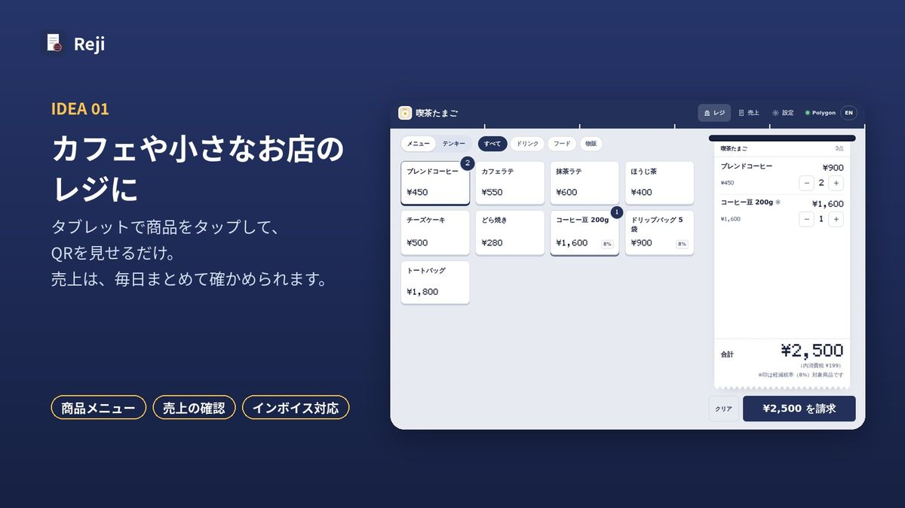
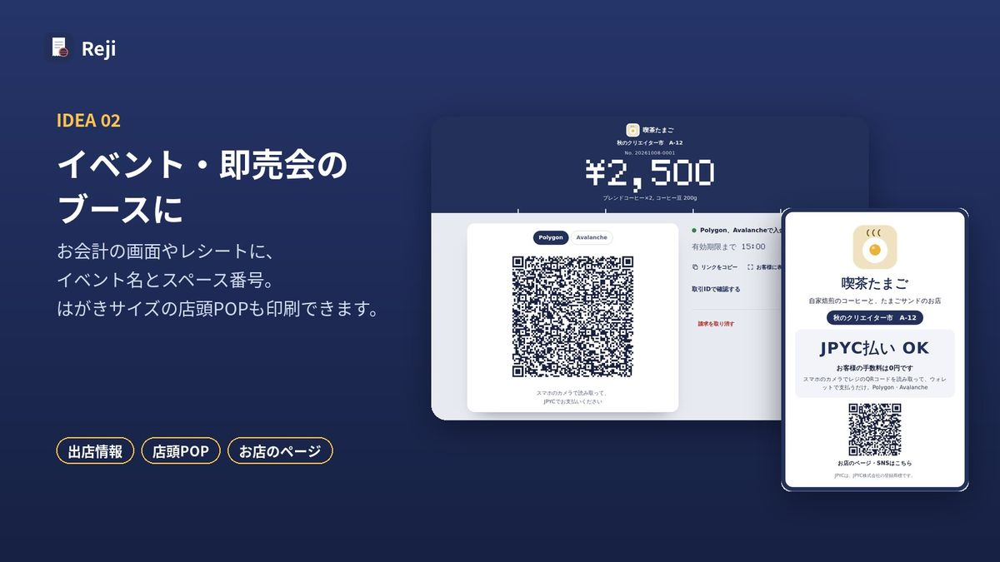
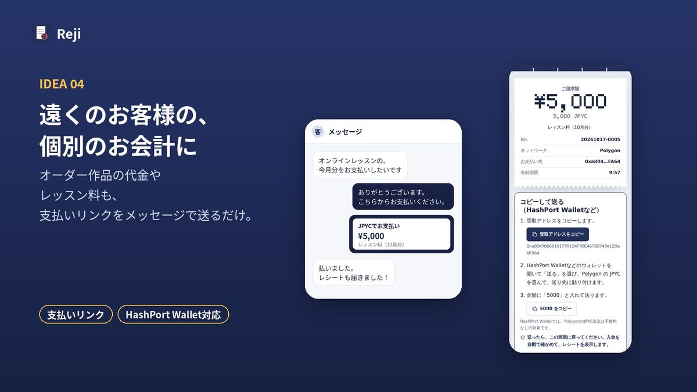
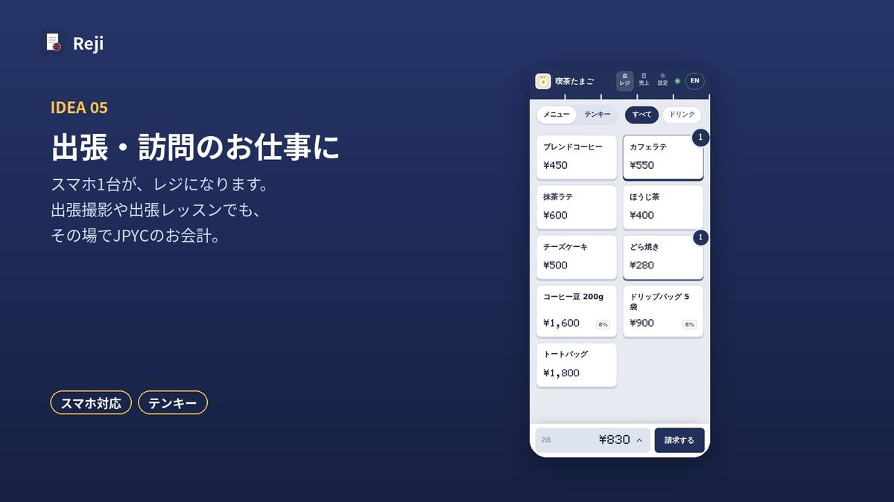
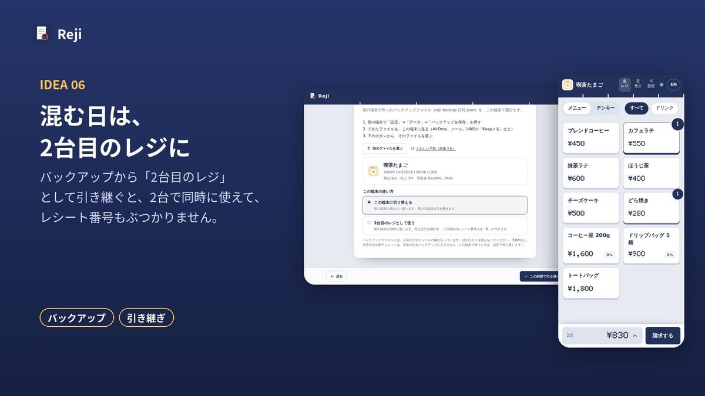
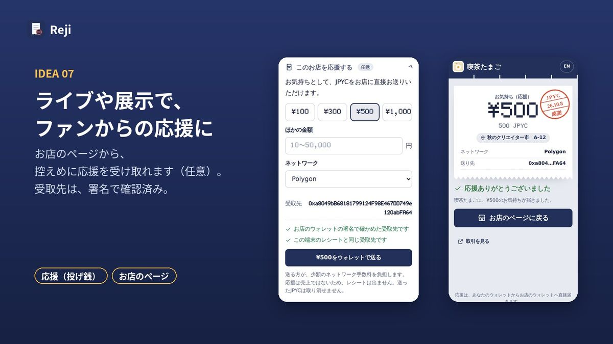
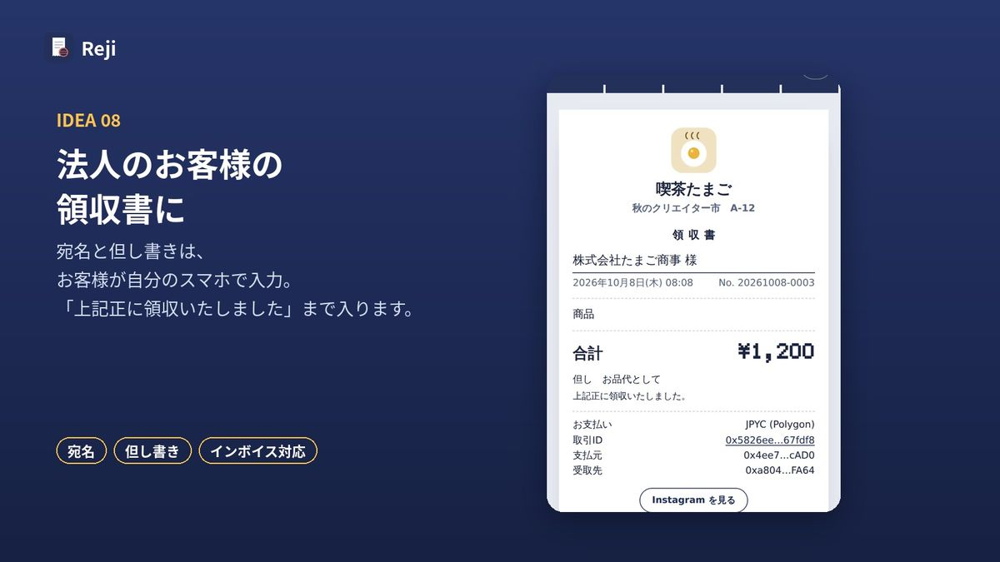
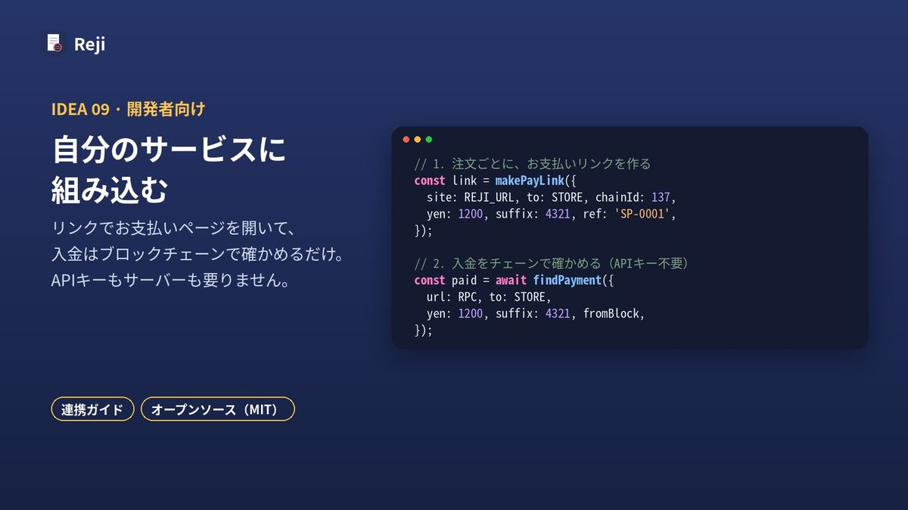

使い方のアイデア
Rejiは、お店のカウンターだけでなく、いろいろな場面で使えます。新しい機能を足さなくても、いまの機能の組み合わせでできることを集めました。
- カフェや小さなお店のレジに
- イベント・即売会のブースに
- 取り置き・事前注文に（店頭で受け取り）
- 遠くのお客様の、個別のお会計に
- 出張・訪問のお仕事に
- 混む日は、2台目のレジに
- ライブや展示で、ファンからの応援に
- 法人のお客様の領収書に
- 自分のサービスに組み込む（開発者向け）
1. カフェや小さなお店のレジに

こんなとき：毎日の店頭のお会計を、決済手数料なしでJPYCで受け取りたいとき。
- 「設定」→「商品メニュー」で、商品と値段を登録します。
- お会計では、商品をタップして「¥○○ を請求」を押します。
- QRコードをお客様に見せて、「入金済」の印が出たらおしまいです。
使う機能：商品メニュー、売上（日ごとの集計・CSV）、インボイス対応のレシート
2. イベント・即売会のブースに

こんなとき：即売会やマルシェで、JPYCでも払えるようにしたいとき。
- 「設定」→「このお店の情報」で、イベント名とスペース番号を入れます。
- 「店頭POPを印刷」で、はがきサイズのPOPを用意して、ブースに置きます。
- お会計の画面とレシートに、出店情報が表示されます。
使う機能：出店情報、店頭POP、お店のページ（紹介・SNS・お品書き）
3. 取り置き・事前注文に（店頭で受け取り）
こんなとき：イベントの前に取り置きを受けたいとき、テイクアウトを先払いで受けたいとき。
- お店のページの紹介文に、「取り置き・事前注文は、XのDMでご相談ください」などと書いておきます。
- 相談を受けたら、お客様の支払いの準備ができたときに、レジで金額を入れて「¥○○ を請求」→「リンクをコピー」を押します。
- メッセージで、そのリンクを送ります。
- 入金済になると、お客様のスマホにレシートが届きます。当日は、そのレシートを見せてもらって受け取りです。
使う機能：支払いリンク、電子レシート、お店のページ
支払いリンクは、「設定」→「レジの動作」の「請求の有効期限」（2〜120分）まで使えます。お支払いが確認できるまで、Rejiを開いたままにしておくと安心です。
お店に来ていないお客様に、事業として商品やサービスを売る場合は、通信販売として、特定商取引法にもとづく表示（事業者の名前や連絡先、返品についての決まりなど）が必要になることがあります。くわしくは、消費者庁の案内や専門家にご確認ください。
4. 遠くのお客様の、個別のお会計に

こんなとき：オーダー作品の代金や、オンラインレッスン・相談の料金を、JPYCで受け取りたいとき。
- レジで金額を入れて（「テンキー」が便利です）、「¥○○ を請求」→「リンクをコピー」を押します。
- メッセージやメールで、リンクを送ります。
- お客様は、いつものウォレットで支払います（HashPort Walletなら「コピーして送る」）。レシートは自動で届きます。
使う機能：支払いリンク、テンキー、電子レシート
支払いリンクの有効期限と、特定商取引法についての注意は、「3. 取り置き・事前注文に」と同じです。
5. 出張・訪問のお仕事に

こんなとき：出張撮影や出張レッスン、ケータリングなどで、その場でお会計したいとき。
- スマホでRejiを開きます（ホーム画面に追加しておくと便利です）。
- 金額を入れて「¥○○ を請求」を押し、お客様にQRコードを見せます。
- 電波が弱い場所では、入金の確認に少し時間がかかることがあります。
使う機能：スマホのレジ、テンキー
6. 混む日は、2台目のレジに

こんなとき：大きなイベントやマルシェで、レジを2台にしたいとき。
- いつもの端末で、「設定」→「データ」→「バックアップを保存」を押します。
- 2台目でRejiを開き、「別の端末のお店を引き継ぐ」→「2台目のレジとして使う」を選びます。
- 2台目のレシート番号には「B」などの記号がつくので、番号がぶつかりません。売上は端末ごとに記録されるので、それぞれのCSVを合わせて確かめます。
使う機能：バックアップ、引き継ぎ（くわしい手順）
7. ライブや展示で、ファンからの応援に

こんなとき：ライブ会場や展示で、作品やパフォーマンスへの応援を受け取りたいとき。
- 「設定」→「このお店の情報」で、応援を受け付けます（受け取るウォレットで署名します）。
- 店頭POPやお店のページのQRコードを、見えるところに置いておきます。
- 応援は、お店のページの下のほうに、控えめに表示されます。
使う機能：応援（投げ銭）、お店のページ、店頭POP
8. 法人のお客様の領収書に

こんなとき：「領収書をください」「宛名は会社名で」と言われたとき。
- お会計のあと、お客様にレシートのQRコードを読み取ってもらいます。
- お客様が自分のスマホで「宛名」と「但し書き」を入れると、宛名入りの領収書になります。宛名はお店には送られません。
- 登録番号を設定していれば、インボイス（適格簡易請求書）の記載にも対応します。
使う機能：電子レシート、宛名・但し書き
9. 自分のサービスに組み込む（開発者向け）

こんなとき：自分のアプリやサービス（イベント受付、ネットショップ、3D空間など）で、JPYCの支払いを受けたいとき。
- 注文ごとに、Rejiのお支払いリンクを作ります。
- お客様は、お店のウォレットへ直接支払います。
- 入金は、ブロックチェーンで確かめます。APIキーもサーバーも要りません。
使う機能：連携ガイド（日本語・English）、参考実装
ほかの使い方も、教えてください
ほかの使い方を思いついたら、ぜひ教えてください。お問い合わせ：reji@mail.grokbot.com
※JPYCはJPYC株式会社の登録商標です。Rejiは独立して開発しているツールで、JPYC株式会社の公式サービスではありません。
English summary
Ways to use Reji with the features it already has: a café or shop counter; an event or market booth (booth number, counter sign, store page); holds and advance orders collected in person, by sending a payment link from the register in a direct message; one-off payments from distant customers such as commissions or lessons; mobile work from a phone; a second register on busy days; low-key tips from fans; formal receipts with the buyer's name; and adding Reji to your own service (see the integration guide). Selling to customers who aren't present can count as mail-order selling under Japanese law, which may require the seller to publish certain details.